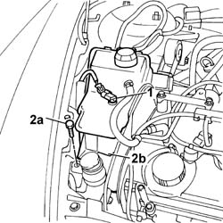
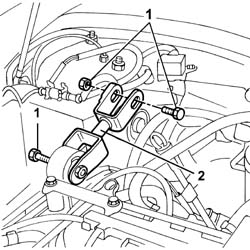

1008C10 Power unit REACTION ROD - Replace
- Path
- Procedures > 10 ENGINE > 1008 POWER UNIT SUPPORTS > 1008C power unit reaction elements > 1008C10 Power unit REACTION ROD - Replace
- Kind
- repair procedure (removal / refitting; the operation number is the code)
- Applies to
- engines: 2.4 JTD 10V; all production periods
- Interactive page
- https://sloeber94.github.io/elrnDB-lThss/en/#/75487
Applies to: engines: 2.4 JTD 10V; all production periods
 Removing
Removing
 Refitting
RefittingSee in Op. 1016A10 SOUND-PROOFING COVER - R.R.
See in Op. 7040D50 ENGINE COMPARTMENT UPPER SOUND INSULATION SHIELD - R.R.
1. Disconnect the electrical connection for the sensor on the engine coolant reservoir.
 | Description | Connector |
|---|---|---|
. | Engine coolant level sensor | K026 |
2. Undo the fixing bolt (2a) and move the engine coolant reservoir (2b) from its housing.

Applies to: engines: 2.4 JTD 10V; all production periods
1. Undo the bolts fixing the reaction rod to the bodyshell and to the engine.
2. Remove the reaction rod.

Applies to: engines: 2.4 JTD 10V; all production periods
Refitting
Removing- Fit the reaction rod and tighten the bolts fixing it to the bodyshell and to the engine to torque.
 | Value - daNm | Fastening | Component | Ø |
|---|---|---|---|---|
. | (body) 5 | Bolt | POWER UNIT REACTION ROD | M10 |
| Value - daNm | Fastening | Component | Ø |
|---|---|---|---|---|
. | (engine) 5 | Bolt | POWER UNIT REACTION ROD | M10 |
- Position the engine coolant reservoir in the special housing.
- Tighten the bolt fixing the reservoir to the bodyshell.
- Connect the electrical connection for the engine coolant level sensor.
| Description | Connector |
|---|---|---|
. | Engine coolant level sensor | K026 |
See in Op. 7040D50 ENGINE COMPARTMENT UPPER SOUND INSULATION SHIELD - R.R.